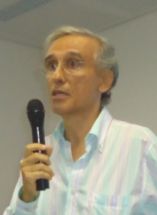

![“O livro de José Andrade facilita o ensino e a aprendizagem em disciplinas de álgebra. Os resultados expostos são baseados em sua experiência na graduação, em atividades de iniciação científica e no mestrado. Portanto, os alunos podem aprofundar seus estudos em tópicos como anéis de ideais principais, anéis de inteiros quadráticos, além de domínios euclidianos, unicidade no algoritmo da divisão, soma de quatro quadrados, triângulos retângulos com lados inteiros e o último teorema de Fermat.” (resumo extraído do site da SBM.)](livro.png)
Neste artigo, quero apresentar um pouco da minha trajetória na área de Matemática. Como professor da UFBA, desempenhei atividades de ensino, pesquisa, extensão e administração, cada uma delas mais intensa em períodos diferentes, por razões que incluem a própria evolução histórica do Instituto de Matemática, atual Instituto de Matemática e Estatística. Estas ponderações justificam dividir este artigo em períodos cronológicos.
1952–1970
Nasci em 23 de abril de 1952, em Salvador e, desde minha infância, sempre gostei e tive muita facilidade para Matemática. Fiz o curso secundário na escola pública: o ginásio foi cursado no Colégio Estadual João Florêncio Gomes, de 1964 a 1967, e o científico no Colégio Central da Bahia, de 1968 a 1970. Além do curso regular, estudei também francês e inglês na Casa da França e no ACBEU, respectivamente.
Um ano antes de entrar na Universidade, sem conhecer direito as perspectivas que teria ao fazer o Curso de Matemática, através de meu pai, tive uma conversa excelente com a Profa. Martha Dantas, professora de Matemática da Faculdade de Educação, que além de me incentivar a fazer o Bacharelado em Matemática, me falou da possibilidade de fazer cursos de pós-graduação, mestrado e doutorado, e das perspectivas que eu teria ao estudar em centros mais avançados.
1971–1974 (UFBA)
Ingressei na Universidade Federal da Bahia, no princípio de 1971. Sabia que não seria um curso terminal, e que teria de me preparar bem para as etapas seguintes que me aguardavam. Logo no segundo semestre de 1971, fui aluno da Profa. Ana Maria Costa, que me falou da possibilidade de obter uma bolsa de iniciação científica do CNPq, e me apresentou ao Prof. Omar Catunda. Fiz o pedido e, em abril de 1972, obtive a resposta positiva da bolsa, sob a orientação do Prof. Catunda, e deixei de ensinar no Colégio dos Servidores Públicos, atividade que havia iniciado um ano antes, pouco depois de ingressar na UFBA. Era mais do eu esperava para aquela época, desenvolvendo outras atividades no Instituto de Matemática, além do curso regular. No segundo semestre de 1972, como parte de minhas atividades na iniciação científica, tive a oportunidade de dar aulas de exercícios de Cálculo I, sob a orientação da Profa. Nina Rosa Braga, que estava concluindo seu mestrado na UFBA.
Quando entrei na UFBA em 1971, o Curso de Mestrado em Matemática já estava implantado e para lecionar suas disciplinas e orientar as dissertações foram contratados vários professores com doutorado como professores visitantes, a maioria estrangeiros. Eles atuavam também na graduação. O Corpo Docente do Departamento contava ainda com o Prof. Omar Catunda, com vários professores que já tinham obtido o grau de mestre na UFBA ou em outros centros ou que faziam o curso de mestrado. Sem querer citar nomes, não posso deixar de mencionar aqueles que mais me influenciaram nessa época: Omar Catunda, Célia Gomes, Arlete Cerqueira Lima, Maria Helena Lanat, Nina Rosa Braga e Ana Maria Costa.
Em julho de 1973, fui ao 9o Colóquio Brasileiro de Matemática, em Poços de Caldas. Esse Colóquio teve a duração de três semanas e havia prova nos cursos elementares. A Profa. Célia Gomes, que acompanhou as minhas atividades de iniciação científica, bem como a dos outros colegas bolsistas em 1973 e 1974, me aconselhou a me matricular nas duas disciplinas nas quais eu já tinha algum conhecimento e me disse que o mais importante para mim seria viver aquele ambiente. Conversando com professores e colegas de outros centros do país, ao contrário do que eu pensava, senti que o Curso de Matemática da UFBA era muito bom e estava no mesmo nível dos cursos das universidades do centro-sul do Brasil.
Naquela época havia dois Departamentos de Matemática no Instituto de Matemática: o Departamento de Matemática Geral, com maior número de professores, responsável pelas disciplinas que serviam aos diversos cursos da área de Ciências Exatas, e o Departamento de Matemática Pura, com um número reduzido de professores, encarregado apenas das disciplinas específicas do Curso de Matemática, algumas delas também optativas para outros cursos, principalmente o de Física. Como aluno, fui representante dos estudantes junto ao Departamento de Matemática Pura pelo período de um ano e tive então os primeiros contatos com a parte administrativa da UFBA. Durante o período em que estava fazendo pós-graduação, os dois departamentos se fundiram passando a se chamar Departamento de Matemática.
Em julho de 1974, com o incentivo da Profa. Célia Gomes, decidi que deveria tentar fazer o Curso de Mestrado no IMPA. Na ocasião, namorava com minha colega Ednalva Vergasta, que eu conhecia desde 1963, quando fomos colegas no último ano do curso primário na Escola Castro Alves, situada próximo ao Largo dos Mares. Depois fomos colegas no Ginásio João Florêncio Gomes e entramos juntos na UFBA. Ela também tinha bolsa de iniciação científica e estava concluindo o Bacharelado em Matemática. Propus a ela nos casarmos em dezembro e em janeiro começarmos o Curso de Mestrado no IMPA. Ela aceitou e, no final de 1974, obtivemos o grau de Bacharel em Matemática e fomos aceitos para o Mestrado do IMPA. Com duas bolsas, pudemos alugar um apartamento de quarto e sala no Rio e criar um ambiente propício ao estudo, dividindo também as tarefas domésticas. Isso foi fundamental para atingirmos nossos propósitos no IMPA.
1975–1979
Em 1975, no meu primeiro ano do Curso de Mestrado no IMPA, tive bolsa da CAPES. Ao seu final notei a maturidade que eu adquiri nesse período para resolver problemas teóricos de Matemática. Isso foi muito importante na minha atuação como professor: a resolução de exercícios é fundamental para o crescimento dos alunos. No ano seguinte, deixei de receber a bolsa porque fui contratado como Assistente de Pesquisa no IMPA. O trabalho como Assistente de Pesquisa me deu a oportunidade de auxiliar os professores em suas atividades de ensino, incluindo ministrar aulas de exercícios.
Para a obtenção do mestrado no IMPA naquela época, em vez de escrever a dissertação de mestrado, era preciso submeter-se a um exame de mestrado, cujo programa era coberto pelo conteúdo de dez disciplinas, embora os créditos exigidos para o Mestrado fossem os de oito quaisquer disciplinas. Minha programação inicial foi fazer o exame de mestrado no final do primeiro semestre de 1977. No final de 1976, concluiria os créditos exigidos faltando fazer as disciplinas Variáveis Complexas e Formas Diferenciais. Mesmo sem me matricular, eu tinha assistido as aulas de Variáveis Complexas no verão de 1976 e, na UFBA, tinha sido aluno do Prof. Omar Catunda nesta matéria. Ele havia lecionado a maior parte do programa do mestrado. O meu orientador, Prof. Carlos Isnard, e o Prof. Manfredo do Carmo me incentivaram a fazer o exame de mestrado em janeiro de 1977. Concluí assim o mestrado, estudando sozinho em dezembro a disciplina Formas Diferenciais, cujo programa não era grande. Algumas dúvidas que tive ao estudar essa disciplina sozinho foram tiradas gentil e eficientemente pelo Prof. Alcides Neto. O esforço extra despendido foi altamente compensado com a conclusão do mestrado.
Assim, em janeiro de 1977 já estava fazendo a primeira disciplina do doutorado, mas faltando ainda definir minha área. Depois de conversar com o Prof. Manfredo do Carmo, decidi por Álgebra, com a qual mais me identificava. Falei com o Prof. Aron Simis para me orientar e ele aceitou. Já tinha tido um contato positivo com ele ao chegar ao IMPA em 1975.
Em março, o Prof. Aron Simis me deu para eu ler um artigo de D. Lazard que tinha acabado de ser publicado. O artigo tratava de sequências regulares em ideais gerados por determinantes de uma matriz retangular com mais colunas do que linhas. Lazard obteve os resultados sem exibir tais sequências e perguntava se seria possível exibí-las. Ao terminar de estudar esse artigo, comecei a pensar no problema proposto nele. Com a orientação do Prof. Aron, me detive no caso mais simples, o da matriz com duas linhas e quatro colunas. No final de junho, já tinha resolvido o problema para essas matrizes e, até o final de agosto, para uma matriz qualquer com duas linhas.
No segundo semestre desse ano, 1977, apresentei no Seminário de Álgebra do IMPA os resultados que havia obtido. Após a minha apresentação, o Prof. Karl-Otto Stöhr, que estava assistindo a convite do Prof. Aron, me chamou a atenção para o fato de eu estar utilizando um caso particular das relações de Grassmann, que ainda eram desconhecidas para mim, e em seguida me disse como eram estas relações no caso geral. Esta informação me levou a resolver o problema no caso das matrizes com duas colunas a mais do que linhas e em outros casos particulares específicos. No final desse ano, primeiro ano do doutorado, já tinha concluído a questão matemática envolvida na parte principal de minha tese.
No primeiro semestre de 1978 fiz o exame de qualificação. O Prof. Aron me mostrou uma questão em assunto relacionado com a tese. Os resultados obtidos nesse segundo problema não foram incluídos nela. Em julho apresentei o meu trabalho durante a V Escola de Álgebra, que foi realizada no IMPA. Depois da apresentação, o Prof. Wolmer Vasconcelos me disse que havia gostado dos resultados obtidos e conversamos sobre a possibilidade de incluir um novo tópico na tese. Eu já havia pensado nele e com o incentivo do Prof. Vasconcelos, em poucos dias escrevi o último capítulo dela.
Naquela altura, principalmente depois da conversa com o Prof. Vasconcelos, tinha plena consciência de que a tese estava praticamente concluída. Escrevi a primeira versão, e entreguei-a ao Prof. Aron. Quando fui para o IMPA, tinha como objetivo retornar à UFBA, após a conclusão do doutorado. Entrei em contato com professores dessa Universidade informando do estado adiantado de minha tese, e terminei por receber uma proposta de contrato de Professor Visitante, a partir de 1o de novembro. Além disso, Ednalva, que já havia concluído o Curso de Mestrado poderia participar da seleção para Auxiliar de Ensino (depois Professor Auxiliar), que seria realizado no começo de novembro. Pedi demissão do meu cargo de Assistente de Pesquisa e assumi o posto na UFBA, tendo sido liberado para continuar no IMPA para a conclusão do doutorado. Em janeiro e até meados de fevereiro do ano seguinte, enquanto escrevia a versão final da tese, ministrei a disciplina Introdução à Álgebra, para os alunos que estavam iniciando o mestrado na UFBA. Em seguida, voltei ao Rio para acompanhar o trabalho de datilografia de minha tese e me preparar para sua defesa, que foi realizada no dia 16 de março de 1979, pouco mais de dois anos após o início do doutorado.
1979–1982
Retornei do IMPA em meados de março de 1979, logo após o doutorado, para atuar como professor visitante do Departamento de Matemática da UFBA, principalmente no Curso de Mestrado. Os professores visitantes, por não terem vínculo permanente com a UFBA, não podiam integrar os Colegiados de Curso, mas no nosso caso, todos eram chamados para as reuniões do Colegiado e as decisões eram sempre tomadas por consenso. Eles lecionavam uma disciplina em cada semestre letivo para poder orientar as dissertações de mestrado e desenvolver atividades de pesquisa. Eu lecionei disciplinas no mestrado ou graduação e participei de algumas bancas de dissertações de mestrado.
Este foi um período de intensa atividade em pesquisa para mim. Era natural trabalhar em pesquisa em colaboração com Aron. Ainda neste ano, concluí junto com ele um artigo com os resultados que obtive enquanto fazia o doutorado e que não foram incluídos na tese.
Em julho de 1979, participei do 12o Colóquio Brasileiro de Matemática. Lá ficou decidido que a próxima Escola de Álgebra seria realizada na UFPE, em julho de 1980. Israel Vainsencher foi escolhido para coordená-la e Gervásio Bastos, da UFC, e eu integraríamos a Comissão Organizadora. Já conhecia os dois: Israel fez parte da comissão julgadora da minha tese de doutorado e Gervásio fez um pós-doutorado de um ano no IMPA enquanto eu fazia o doutorado e fomos colegas em uma disciplina.
Pouco depois, foi aberto concurso na UFBA para Professor Adjunto na matéria Álgebra. Um dos requisitos na época era escrever um trabalho original na matéria do concurso. Obtive resultados originais em um assunto que era uma continuação natural de um dos capítulos de minha tese de doutorado. Fui aprovado neste concurso em julho de 1980.
Para tratar da organização da VI Escola de Álgebra, visitei a UFPE em novembro de 1979, quando foram definidas as diretrizes a serem seguidas. As decisões posteriores foram tomadas por Israel Vainsencher, algumas delas depois de consulta telefônica. Lá, fiz uma primeira apresentação dos últimos resultados obtidos para a minha tese do concurso. Após o retorno da UFPE, solicitei bolsa de pesquisa ao CNPq. Obtive esta bolsa por cinco períodos de dois anos cada: o primeiro no nível II-C e os demais no nível II-A.
No começo de 1980, transformei os resultados principais obtidos na minha tese de doutorado em artigo, o qual foi publicado na mesma revista onde havia sido publicado o trabalho de D. Lazard que lhe dera origem. A tese do concurso também foi transformada em artigo publicado no Boletim da Sociedade Brasileira de Matemática. Trabalhei ainda em outro artigo em conjunto com Aron Simis e Wolmer Vasconcelos, o qual também foi publicado.
No segundo semestre de 1980, Aron me propôs escrevermos um livro sobre Álgebra Comutativa como texto para um curso no 13o Colóquio Brasileiro de Matemática. Como o projeto foi aceito pela organização do Colóquio, passei todo o verão de 1981 no IMPA, trabalhando no livro com Aron. Eu fiquei responsável por ministrar as aulas durante o Colóquio. Por coincidência, todos os quatro artigos que havia escrito até então, sozinho ou em colaboração, e mais o livro do Colóquio foram publicados em 1981.
Em 1981, comecei a orientação de duas dissertações de mestrado, as quais foram defendidas no primeiro semestre de 1983.
Durante o Colóquio de 1981 fui convidado a ministrar o Curso de Álgebra no verão seguinte na UFPE. Foi uma experiência muito boa e, além de ministrar o Curso, participei de uma banca de Dissertação de Mestrado. Foi também um período de agradável convívio familiar. Viajei de carro com Ednalva e nossa filha Cecília que tinha um ano de idade e aluguei um apartamento simples, mas muito bem localizado na praia da Boa Viagem, em frente ao mar. Pela manhã, enquanto estava na Universidade, elas iam à praia; à tarde, passeávamos juntos e, à noite, eu preparava a aula do dia seguinte.
Nesse período participei como conferencista de uma Reunião Regional da SBM, realizada em São Luís e de duas reuniões promovidas pela SBM e realizadas no IMPA, com um representante de cada uma das principais universidades do país para se estabelecer quais as principais disciplinas que os cursos de graduação em matemática deveriam ter para que esse curso fosse considerado bom pela SBM. Todas as disciplinas que foram incluídas nesta lista já constavam da grade curricular do curso da UFBA no tempo da minha graduação.
Essa movimentação toda, participando de reuniões e visitando outros centros me fizeram entender como funcionavam os cursos de mestrado do país, principalmente no tocante às dissertações de mestrado, experiência que não tive enquanto estudante. Além disso, passei a conhecer e ser conhecido por outros professores de outras universidades. Esse aprendizado foi muito importante para a minha atuação na UFBA.
1982–1992
Desde que assumi como Professor Adjunto, aos poucos, minha participação dentro do Instituto de Matemática foi aumentando. Participei de uma banca de Concurso para Professor Auxiliar. Submeti ao CNPq vários projetos para melhoria da Biblioteca do Instituto e para a vinda de professores para conferências e julgamento de dissertações de mestrado. Em maio de 1981, passei a fazer parte do Colegiado do Curso de Mestrado e assumi a sua coordenação em agosto de 1982. Desde que o Prof. Catunda se aposentou, em 1976, o Curso de Mestrado vinha sendo coordenado por professores que não tinham o doutorado, embora no seu corpo docente houvesse alguns doutores, que eram responsáveis por toda parte acadêmica do Curso. Naquela época, não tinha vontade de me envolver com a parte administrativa, mas senti a necessidade de assumir este cargo e isto foi bom para o Curso de Mestrado. Com a minha atuação na sua coordenação, o Curso passou a ter apoio da CAPES, inclusive com bolsas de estudo. Passamos, a partir da minha gestão como Coordenador do Curso de Mestrado, a ter sempre um professor de outros cursos de mestrado nas bancas das dissertações. Até então, na grande maioria das vezes, as bancas daqui eram compostas somente por professores do nosso Curso.
Passei a orientar alguns alunos de iniciação científica. Alguns deles concluíram o doutorado e se estabeleceram como professores da UFBA. Na parte de pesquisa, conclui mais dois artigos com Aron Simis. Um em 1984 e outro em 1989 os quais foram publicados em revistas no exterior. Obtive ainda alguns outros pequenos resultados que não geraram artigos. Visitei ainda algumas instituições brasileiras, realizando atividades, tais como minicursos, palestras, atuação como membro de banca de concurso ou de dissertação de mestrado e participando de reuniões científicas: IMPA, UFMG, UFC, UFPE, UFPB, UEFS.
Em 1985, ficou pronta a terceira Dissertação de Mestrado que orientei. Nesta época, o Curso de Mestrado estava com dificuldade de conseguir bons alunos. Apesar de dois dos professores visitantes estrangeiros terem se estabelecido na UFBA, o número de doutores no Corpo Docente do Curso ainda era bem pequeno e, em função disto, éramos levados a incentivar os nossos melhores alunos a fazer o mestrado fora. Já vinha trabalhando na iniciação científica e resolvi intensificar este trabalho. Para 1987, obtive do CNPq oito bolsas desta modalidade e, nesta tarefa, fui auxiliado por outros colegas do Departamento de Matemática.
Em agosto de 1986, após dois mandatos deixei a coordenação do mestrado, mas continuei como Vice-Coordenador, ficando neste cargo até maio de 1989. Nessa ocasião, o Corpo Docente do Curso de Mestrado havia ganho três novos professores com doutorado: os professores Marco Antônio Fernandes, Enaldo Vergasta e Aron Simis que havia se transferido da UFPE para a UFBA. O então coordenador, Prof. Benedito Ikeda, e eu deixamos respectivamente os cargos de Coordenador e Vice para propiciar uma nova eleição e o Prof. Aron Simis poder assumir como coordenador. Como fruto do intenso trabalho de iniciação científica desenvolvido por vários professores do Departamento de Matemática, o corpo discente do mestrado tinha começado a melhorar e a ampliar.
Também com a chegada desses três professores pude diminuir minha atuação no mestrado e aumentá-la no curso de graduação. Estava iniciando uma nova fase da minha carreira como professor do Departamento de Matemática da UFBA. Em 1992, passei a fazer parte do Colegiado do Curso de Graduação em Matemática.
No começo de 1988, a Congregação do Instituto de Matemática me elegeu para representar o Instituto no Conselho de Coordenação da Universidade, atual CONSEPE. Como fui reconduzido, minha presença neste Conselho foi de quatro anos. Todos os representantes do Instituto neste Conselho tiveram assento na Câmara de Pós-Graduação. Foi uma experiência bastante enriquecedora, pois passei a entender melhor o funcionamento da Universidade e passei a participar de suas decisões acadêmicas, defendendo ideias que beneficiavam o Curso de Mestrado em Matemática.
1993–2003
Foi um período com muitas funções administrativas. Em julho de 1993, voltei a assumir a Coordenação do Colegiado do Curso de Mestrado e fui seu coordenador por mais quatro anos. Diferente de 1982, desta vez eu assumi o cargo não por uma necessidade imperiosa, mas motivado pela perspectiva de um salto qualitativo no Curso. Além da experiência adquirida como coordenador do curso e como membro do Conselho de Coordenação, teria a participação mais intensa dos novos colegas no Colegiado discutindo os problemas e ajudando a tomar decisões. Logo depois que assumi a coordenação, a CAPES acenou com a possibilidade de fazermos um plano de recuperação para o Curso. Com este plano aprovado pela CAPES, o Curso passou a ter apoio financeiro e as bolsas de estudo, que estavam suspensas, voltaram gradativamente. Isto possibilitou que bons alunos oriundos da iniciação científica optassem por permanecer na UFBA, e consequentemente o nosso mestrado ganhou um novo impulso e foi se consolidando cada vez mais.
Em 1996, passei a fazer parte da Congregação do Instituto de Matemática. Naquela época, os coordenadores de colegiado e chefes de departamento não eram necessariamente membros da Congregação. Eu passei a fazer parte como representante dos Professores Adjuntos. Pouco tempo depois, fui escolhido pela Congregação para ser o substituto do Vice-Diretor. Cheguei a assumir a direção por períodos curtos de alguns dias, em função de viagens do Diretor, Prof. Adelmo de Jesus e da Vice-Diretora, Profa. Ilka Freire, chegando inclusive a participar de reuniões do Conselho Universitário. Ainda em 1996, com o final do mandato do Prof. Adelmo, a Profa. Ilka Freire se candidatou a Diretora do Instituto e eu como seu Vice. Fomos eleitos pela comunidade e assumimos os cargos neste mesmo ano.
Em dezembro de 1997, já tendo concluído o meu mandato como Coordenador do Curso de Mestrado, voltei a ser indicado como representante do Instituto no Conselho de Coordenação. Pedi para sair no final de 1998, após o final do primeiro ano do mandato, porque no começo de 1999, a Profa. Ilka Freire entrou de férias e se aposentou em seguida. Então assumi interinamente a função de Diretor, já que o meu mandato de Vice-Diretor estava em curso e me candidatei ao cargo de Diretor, tendo assumido este mandato em junho.
Na parte acadêmica, fiz concurso para Professor Titular em agosto de 1999, do qual constaram Prova de Títulos, Defesa de Memorial e Conferência na área do concurso. No começo do ano seguinte, assumi como Professor Titular. Durante todo o período em que fui diretor, apesar de não ter obrigação, sempre lecionei uma disciplina, todas no primeiro horário da manhã, para que as tarefas da direção não prejudicassem as minhas aulas. É importante mencionar que dar aula sempre foi o que mais gostei de fazer durante todo o meu tempo de professor. Orientei mais dois alunos em suas Dissertações de Mestrado, tendo um deles concluído o seu trabalho em 1998, e o outro em 1999. A orientação na iniciação científica continuou initerruptamente, com pelo menos dois alunos em cada ano.
Em 1998, participei pela primeira vez de uma atividade de extensão, ministrando aulas para professores da UNEB, na cidade de Senhor do Bonfim. No ano seguinte, no projeto Pró-Ciências no Instituto de Matemática, ministrei um curso sobre Análise Combinatória. Ele foi repetido em 2000 e 2001. Nessa época, já tinha sido criado o LEMA, com modelos concretos, principalmente na área de Geometria e um pouco na de Álgebra Elementar. Como eu ministrava as aulas de Análise Combinatória sempre fazendo desenhos ou modelos no quadro para que essa visualização tornasse mais fácil a compreensão e solução dos problemas pelos alunos, propus à Profa. Elinalva Vasconcelos, Coordenadora do LEMA na época, a construção de modelos concretos que ajudassem os alunos na solução dos problemas de Análise Combinatória. Dessa maneira, o LEMA ganhou os primeiros modelos nesta área. Eles foram construídos pela artista Fabiana Laranjeiras. Daí até a minha aposentadoria, participei de vários projetos de extensão.
Na época em que estava na direção do Instituto, resolvi escrever um artigo para ser submetido para publicação na revista Matemática Universitária da SBM, contendo alguns contraexemplos simples em espaços vetoriais de dimensão infinita, de resultados válidos nos espaços vetoriais de dimensão finita. Eu já tinha elaborado esses contraexemplos em 1990, quando ensinei pela primeira vez a disciplina Álgebra Linear II da graduação, mas nunca tinha escrito de uma forma que pudesse ser publicado. O artigo foi aceito e publicado no volume 37 do ano de 2004.
Em setembro de 2000, como membro do Conselho Universitário da UFBA, fui indicado para ser um dos três representantes deste Conselho no Conselho de Curadores, tendo sido um dos seus membros até o final do meu mandato de Diretor, quando também se encerrou minha participação no Conselho Universitário e, consequentemente, também no Conselho de Curadores. Participei então dos três Conselhos da Universidade que havia no meu tempo de professor: Conselho de Coordenação, depois CONSEPE, Conselho Universitário e Conselho de Curadores.
2003–2011
Foi durante o tempo em que fui Diretor do Instituto que começaram regularmente na UFBA os concursos para a classe de Professor Adjunto, que exige para entrada o grau de Doutor. Com isso, o Corpo Docente do Curso de Mestrado foi aumentando. Consequentemente, mudaram um pouco as minhas atividades no Departamento de Matemática. Continuei lecionando duas disciplinas a cada semestre, sendo a última no Curso de Mestrado em 2007. A partir daí, só lecionei disciplinas na graduação, sempre disciplinas específicas do Curso de Matemática. É interessante observar que todas as disciplinas que lecionei nesse período foram da área de Álgebra ou Variáveis Complexas ou Análise Combinatória, todas relacionadas com o meu doutorado: a área de Álgebra foi a área do doutorado, Variáveis Complexas a segunda área do exame de qualificação, e utilizei fortemente Análise Combinatória no último capítulo da tese. Usei também Combinatória na demonstração de alguns teoremas em trabalhos que publiquei, entre eles um artigo de pesquisa com Aron Simis. Não posso deixar de mencionar aqui que, depois que entrei na universidade como aluno em 1971, o único curso que fiz sobre o assunto de Análise Combinatória foi na minha graduação: a disciplina Estatística III-C, lecionada pela Profa. Margot Piva, excelente professora do Departamento de Estatística.
As orientações de iniciação científica foram até 2005. Recebi nesse ano uma homenagem da UFBA pela minha participação destacada nos Seminários Estudantis de Pesquisa da UFBA que estava completando 25 anos. Também fui Professor Homenageado ou Patrono em cinco solenidades de formatura do Curso de Graduação em Matemática.
No final de 2004, fui indicado para mais um mandato no CONSEPE, sendo reconduzido na representação para um segundo período, participando desse Conselho de janeiro de 2005 a dezembro de 2008.
Apresentei um projeto que foi aprovado pelo Departamento para escrever uma série de artigos sobre assuntos que complementam tópicos das diversas disciplinas do Curso de Graduação em Matemática na Área de Álgebra. Os dois primeiros, Triângulos Retângulos com Lados Inteiros: Procurando as Hipotenusas e Anéis Quadráticos Euclidianos foram publicados na revista Matemática Universitária nos volumes 41 e 48/49 dos anos de 2006 e 2010, respectivamente. Depois, resolvi escrever um livro sobre esse tema no qual inclui todo o material publicado nos três artigos que escrevi para a Matemática Universitária. Quando me aposentei em 2011, o livro não estava ainda todo escrito, mas continuei com o projeto. O livro Tópicos Especiais em Álgebra ficou pronto e foi publicado pela SBM, na Coleção Iniciação Científica, no começo de 2014. São doze capítulos com tópicos independentes. Dediquei-o à minha esposa Profa. Ednalva Andrade, colega, amiga, parceira, que contribuiu muito para a minha carreira e a quem presto mais uma homenagem nestas notas. Fiz seu lançamento no auditório do Instituto de Matemática. O ponto mais importante foi a apresentação que fiz no auditório: convidei professores, ex-professores, alunos, ex-alunos, amigos e familiares. Disse a todos que falaria para os meus amigos não matemáticos. Fiquei muito feliz com o evento. De todos os meus trabalhos publicados, esse foi um dos que mais gostei de ter escrito, só perdendo para a minha tese de doutorado.
L1.7cm 
José Fernandes nasceu em Salvador, obteve o doutorado em Álgebra no IMPA e é professor aposentado da UFBA, onde também se graduou. Além da matemática, uma das coisas que gosta de fazer é passear e tomar sorvete na Ribeira, onde morou até um ano antes de completar a graduação.